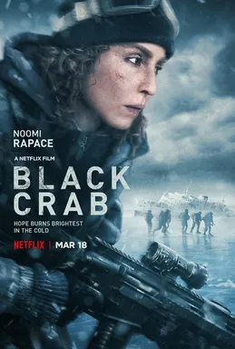

The genetics
The cargo at the centre of the mission is a biological weapon: vials marked with a biohazard warning, described as a virus or biological combat agent, that the military wants delivered to the Ödö research base, where scientists are to use it to win the war. The sources do not say whether it is engineered; it is a laboratory-held pathogen meant as a weapon of mass destruction. The military commanders, Colonel Raad and Admiral Nordh, are presented as cold manipulators who lie to soldiers to get the weapon delivered, and the base scientists remain in the background. As the soldiers realize what they are carrying, the film becomes a pacifist parable: one of them kills himself rather than serve it, and the heroine dies destroying it. Nothing is said about how the agent works.
How genetics is portrayed
- Overall portrayal of genetics
- negative The bioweapon is the instrument of a cynical military command, and the film's anti-war message rests on rejecting it.
- Outcome of the genetic intervention
- negative Delivering the weapon costs the lives of most of the team, and Edh dies destroying it.
- Military command (Colonel Raad, Admiral Nordh) and the Ödö research base
- villain Aim: military (negative). The commanders send soldiers on a suicide mission, deceiving Edh about her daughter, to bring a biological weapon to the research base to win the war. The film presents them as a manipulative war machine that values the weapon over lives.
The story
In a Sweden at war, former speed skater Caroline Edh was separated from her young daughter Vanja when the fighting began. Now a soldier, she is recruited by Colonel Raad for a mission called Black Crab: with a small team she must skate across the frozen Stockholm archipelago to deliver two secret canisters to the research base of Ödö, cargo that Raad says could win the war. She accepts because he promises that she will be reunited with Vanja. On the way, team members drown, are shot or turn on each other, and when they open the canisters they find vials marked as a biohazard, apparently a biological weapon; one of the dying soldiers shoots himself, warning that it would be the end of everything. Edh delivers the vials but learns that the promise about her daughter was a lie. She steals the vials back from the laboratory and destroys them with a grenade, dying in the act.